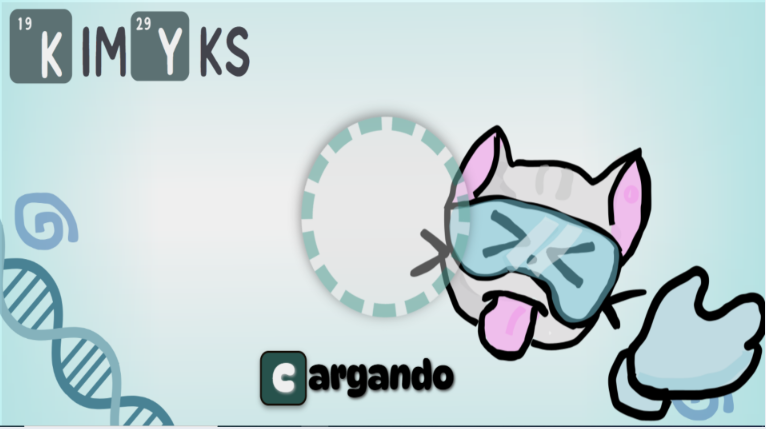

PROBLEMÁTICA
En la Institución Educativa Francisco Antonio Zea en el grado 10° en la asignatura de química del componente científico la problemática es la dificultad de los estudiantes para comprender los conceptos de la química, en especial aquellos relacionados con las reacciones químicas y la interpretación y comprensión de la tabla periódica.
SOLUCIÓN
Desarrollar una aplicación didáctica que le permita a los estudiantes del grado 10° fortalecer las competencias de la asignatura de química donde evaluaremos los conceptos de la tabla periódica, enlaces químicos y estados de la materia.